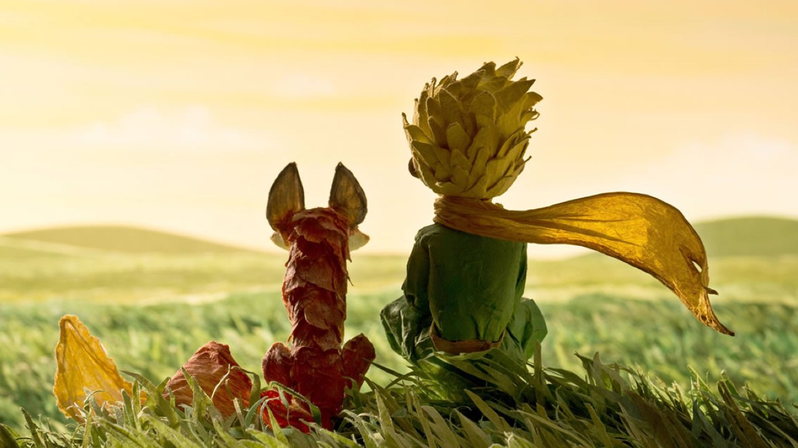
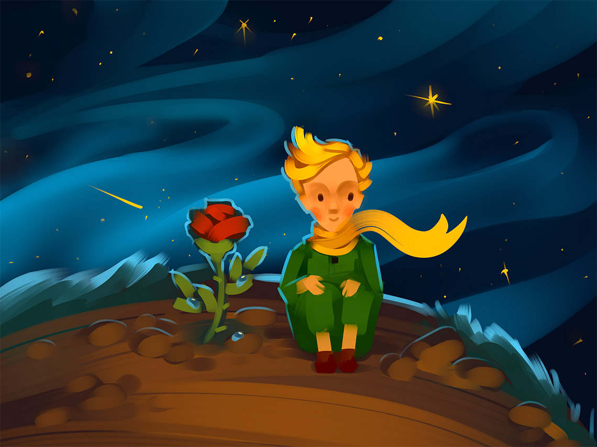

Цитаты из книги "Маленький принц" Антуана де Сент-Экзюпери

"Хотел бы я знать, зачем звезды светятся. Наверно, затем, чтобы рано или поздно каждый мог вновь отыскать свою"
"Глаза слепы. Искать надо сердцем"
"Никогда не надо слушать, что говорят цветы. Надо просто смотреть на них и дышать их ароматом. Мой цветок напоил благоуханием всю мою планету, а я не умел ему радоваться"
"Таким был прежде мой Лис. Он ничем не отличался от ста тысяч других лисиц. Но я с ним подружился, и теперь он — единственный в целом свете"
"Вы красивые, но пустые. Ради вас не хочется умереть"
"Знаешь, отчего хороша пустыня? Где-то в ней скрываются родники"

"Себя судить куда труднее, чем других. Если ты сумеешь правильно судить себя, значит, ты поистине мудр"
"Все взрослые сначала были детьми, только мало кто из них об этом помнит"
"Взрослые никогда ничего не понимают сами, а для детей очень утомительно без конца им всё объяснять и растолковывать"